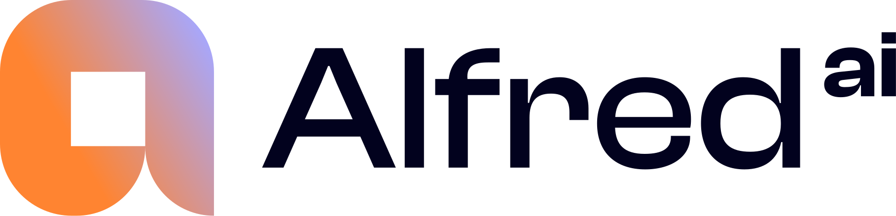

The week in decisions · [WEEK OF]
Creative fatigue is the quiet budget killer
A rotation cadence beats reactive refreshes — plan the next variant before this one tires.
Headroom hides in steady campaigns
The performers nobody talks about are worth a weekly look — quiet rarely means finished.
Kill thresholds save Mondays
Agree the exit before launch, then decide by evidence — not by anniversary.